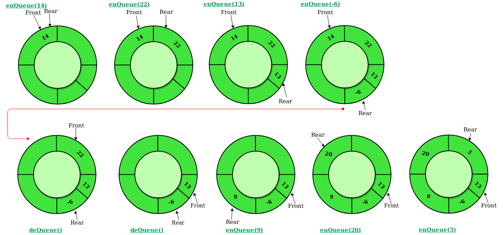

Aim:
Implementation of Circular Queue using Array.
Theory:
Circular Queue
A circular queue is similar to a linear queue as it is also based on the FIFO (First In First Out) principle except that the last position is connected to the first position in a circular queue that forms a circle. It is also known as a Ring Buffer.
Operations on Circular Queue:
A circular queue is similar to a linear queue as it is also based on the FIFO (First In First Out) principle except that the last position is connected to the first position in a circular queue that forms a circle. It is also known as a Ring Buffer.

Operations on Circular Queue:
- Front: It is used to get the front element from the Queue.
- Rear: It is used to get the rear element from the Queue.
- enQueue(value): This function is used to insert the new value in the Queue. The new element is always inserted from the rear end.
- deQueue(): This function deletes an element from the Queue. The deletion in a Queue always takes place from the front end.
- First, we will check whether the Queue is full or not.
- Initially the front and rear are set to -1. When we insert the first element in a Queue, front and rear both are set to 0.
- When we insert a new element, the rear gets incremented, i.e., rear=rear+1. First, we check whether the Queue is empty or not. If the queue is empty, we cannot perform the dequeue operation.
- When the element is deleted, the value of front gets decremented by 1. If there is only one element left which is to be deleted, then the front and rear are reset to -1.
Simulation:
Quiz:
Feedback: